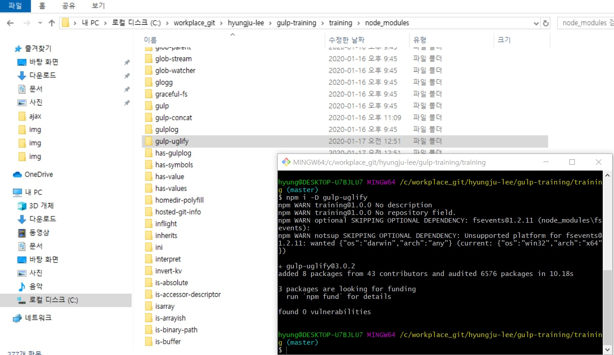

Gulp 플러그인을 활용한 파일 결합, 압축, 문법 검사
- Gulp 플러그인을 활용한 파일 결합, 압축, 문법 검사
-
Gulp를 사용할 최소한의 준비 과정을 마쳤으니, 이제 본격적으로 Gulp 플러그인(Plugin)을 활용하여
웹 개발에 유용한 업무를 등록하는 과정을 배웁니다. - gulp-concat 모듈로 자바스크립트 파일 결합하기
-
첫 번째로 설치할 플러그인은 gulp-concat(https://github.com/wearefractal/gulp-concat)
입니다.
이 플러그인은 이전에 직접 만들어 배포한 combineJS 모듈처럼 여러 개의 자바스크립트 파일을 하나의 파일로 병합합니다.
플러그인은 Git Bash에서 npm i -D gulp-concat 명령어를 실행하여 설치합니다.
(npm i -D는 npm install --save-dev를 줄여 쓴 명령어입니다.) 설치가 끝나면 [node_modules] 디렉터리에 gulp-concat 모듈 패키지가 생성됩니다.
이제 gulpfile.js 파일에 gulp-concat 모듈을 호출하는 코드와 gulp.task() 메소드에 업무 이름 (combine:js) 코드를 추가합니다.// 2015년 기준 var gulp = require('gulp'), concat = require('gulp-concat'); // javascript 파일들을 병합 gulp.task('combine:js', function(){ }) // Gulp.task()를 사용해 기본(Default) 테스크 정의 gulp.task('default', function(){ // 콘솔(Console)에 메시지 기록(log) console.log('gulp default 일이 수행되었습니다.'); })
[Gulp] 디렉터리에 [src] 디렉터리를 만들어 병합할 js 파일을 생성합니다.
다음을 참고하여 코드를 입력합니다.
gulp.src() 메소드 줄은 gulp 객체의 src()에 병합하려는 자바 스크립트 파일 경로를 배열 데이터 형식으로 추가하면 순서대로 병합하는 명령어입니다.
[src] 디렉터리와 파일을 생성한 후 진행합니다.
그리고 .pipe() 줄은 gulp-concat 모듈을 호출하여 참조한 concat() 함수에 병합한 후 생성할 파일 이름을 문자열로 전달해서 실행합니다.
이 과정에서 병합이 일어나며, 생성하고자 하는 파일 이름이 결정됩니다.
마지막 .pipe() 줄에서는 gulp.dest() 메소드가 수행되는데,
Gulp 객체의 dest()는 전달받은 인자(문자열)를 토대로 파일이 출력될 목적지(Destination)를 설정하는 역할을 합니다.const gulp = require('gulp'); const concat = require('gulp-concat'); // javascript 파일들을 병합 gulp.task('combine:js', function () { gulp .src(['./src/script1.js', './src/script2.js']) .pipe(concat('combined.js')) .pipe(gulp.dest('./dist')); }); // Gulp.task()를 사용해 기본(Default) 테스크 정의 gulp.task('default', function(){ // 콘솔(Console)에 메시지 기록(log) console.log('gulp default 일이 수행되었습니다.'); });
목적지로 출력합니다.
Git Bash에서 gulp combine:js 명령어를 생행하면,
gulpfile.js에 등록한 combine:js 업무가 시작(Starting)해서 종료(Finished)합니다.
2015년 기준이라 Did you forget to signal async completion?
위와같은 메시지가 뜹니다.
gulpjs 사이트 가면 아마 위와 관련된 설명이 있을 것입니다..
dist는 배포된 곳을 의미합니다. - 병합할 파일 개수가 늘어날 때마다 매번 배열 아이템을 추가해야 하나요?
-
병합할 파일 개수가 늘어나면 유지보수 측면에서 바로 전에 사용한 배열 방식은 불편합니다.
이러한 불편함을 해소하려면 다음처럼 '모든 자바스크립트 파일을 의미하는 문자열(*.js)'로 변경해야 합니다.
이렇게 변경하면 수십 개의 파일을 편리하게 병합할 수 있습니다.const gulp = require('gulp'); const concat = require('gulp-concat'); // javascript 파일들을 병합 gulp.task('combine:js', function () { gulp .src('./src/*.js') .pipe(concat('combined.js')) .pipe(gulp.dest('./dist')); }); // Gulp.task()를 사용해 기본(Default) 테스크 정의 gulp.task('default', function(){ // 콘솔(Console)에 메시지 기록(log) console.log('gulp default 일이 수행되었습니다.'); }); - 파일을 병합할 때 특정 파일을 우선적으로 병합하도록 설정할 수 있나요?
-
앞서 설명한 방법은 유지보수를 할 때는 편리하지만, 파일 간 병합이 알파벳 순서대로 됩니다.
그러므로 특정 파일을 우선적으로 병합하려면 다음처럼 배열을 사용하되,
병합할 파일 경로를 먼저 제공합니다.
그런 다음 모든 파일을 의미하는 문자열(*)을 배치합니다.const gulp = require('gulp'); const concat = require('gulp-concat'); // javascript 파일들을 병합 gulp.task('combine:js', function () { gulp .src(['./src/script2.js', './src/*.js']) .pipe(concat('combined.js')) .pipe(gulp.dest('./dist')); }); // Gulp.task()를 사용해 기본(Default) 테스크 정의 gulp.task('default', function(){ // 콘솔(Console)에 메시지 기록(log) console.log('gulp default 일이 수행되었습니다.'); }); - 하위 디렉토리의 파일까지 모두 합칠 수 있나요?
-
하위 디렉터리로 분리하여 모듈 관리 목적으로 만든 자바스크립트 파일까지 병합해야 할 때는 다음처럼 합쳐야할 파일 경로를 **/*.js로 표기합니다.
[src] 디렉터리에 [js/libs] 하위 디렉터리를 생성한 후 임의의 자바 스크립트 파일을 추가합니다.
그런 다음 명령어를 실행하여 결과를 확인합니다.const gulp = require('gulp'); const concat = require('gulp-concat'); // javascript 파일들을 병합 gulp.task('combine:js', function () { gulp // .src(['./src/script2.js', './src/*.js']) // .pipe(concat('combined.js')) // .pipe(gulp.dest('./dist')); .src('src/js/libs/**/*.js') .pipe(concat('DOMlibrary.js')) .pipe(gulp.dest('./dist')); }); // Gulp.task()를 사용해 기본(Default) 테스크 정의 gulp.task('default', function () { // 콘솔(Console)에 메시지 기록(log) console.log('gulp default 일이 수행되었습니다.'); }); - gulp-uglify 모듈로 자바스크립트 파일 압축하기
-
파일 병합에 이어 압축(compress)도 알아봅니다.
다음을 참고하여 자바스크립트 파일을 압축하는 Gulp 플러그인 gulp-uglify (https://www.npmjs.com/package/gulp-uglify)를 설치합니다.
NPM 명령어로 설치했으며, 개발 의존(devDependencies)형으로 설치했습니다.  설치가 끝나면 다음을 참고하여 gulpfile.js 파일 위쪽에 gulp-uglify 모듈을 호출하는 코드를 추가합니다.
자바스크립트 파일들을 병합한 후 압축할 수 있도록 그 아래에 파이프(pipe)를 연결하고,
내부에 uglify() 함수를 적용합니다.
그러면 배포지(Dist)에 파일을 생성하기 전에 압축 과정을 수행합니다.const gulp = require('gulp'); const uglify = require('gulp-uglify'); const concat = require('gulp-concat'); // javascript 파일들을 병합 gulp.task('combine:js', function () { gulp // .src(['./src/script2.js', './src/*.js']) // .pipe(concat('combined.js')) // .pipe(gulp.dest('./dist')); .src('src/js/libs/**/*.js') .pipe(concat('DOMlibrary.js')) .pipe(uglify()) .pipe(gulp.dest('./dist')); }); // Gulp.task()를 사용해 기본(Default) 테스크 정의 gulp.task('default', function () { // 콘솔(Console)에 메시지 기록(log) console.log('gulp default 일이 수행되었습니다.'); });
[dist] 디렉터리에 생성된 DOMlibrary.js 파일을 열면, 다음처럼 병합, 압축된 결과를 확인할 수 있습니다. 이때 결과 파일 내용에서 눈여겨볼 부분은 주석(Comments)이 사라지고 전달 인자 값이 모두 알파벳 한 글자로 변경된 점입니다.
이는 uglify() 함수가 처리하면서 기본 설정된 옵션 값에 따라 발생한 결과입니다. - uglify 압축과 주석 옵션 설정하기
-
변수, 매개변수 등이 알파벳 한 글자로 변경되지 않게 하려면, uglify() 함수에 mangle 옵션 값을 false로 설정합니다.
그림을 참고하여 옵션을 추가하고 저장합니다.
그러면 알파벳 한 글자로 압축하는 과정은 수행하지 않습니다.
변경한 내용은 Git Bash에서 동일한 명려어로 결과를 확인하면, 다음과 같이 압축되는 과정은 제외됩니다.const gulp = require('gulp'); const uglify = require('gulp-uglify'); const concat = require('gulp-concat'); // javascript 파일들을 병합 gulp.task('combine:js', function () { gulp // .src(['./src/script2.js', './src/*.js']) // .pipe(concat('combined.js')) // .pipe(gulp.dest('./dist')); .src('src/js/libs/**/*.js') .pipe(concat('DOMlibrary.js')) .pipe(uglify({ mangle: false })) .pipe(gulp.dest('./dist')); }); // Gulp.task()를 사용해 기본(Default) 테스크 정의 gulp.task('default', function () { // 콘솔(Console)에 메시지 기록(log) console.log('gulp default 일이 수행되었습니다.'); });
uglify() 함수에 preserveComments 옵션을 추가하고 값을 all 또는 some으로 설정하면,
압축 과정에서 주석이 지워지지 않고 보존(Preserve)됩니다.
all 값일 때는 모든 주석이 보존되고,
some 값일 때는 느낌표(!)가 붙은 주석만 보존됩니다.
버전업되면서 preserveComments 옵션이 ouput 옵션 안에 comments 옵션으로 바뀐 것 같습니다.const gulp = require('gulp'); const uglify = require('gulp-uglify'); const concat = require('gulp-concat'); // javascript 파일들을 병합 gulp.task('combine:js', function () { gulp // .src(['./src/script2.js', './src/*.js']) // .pipe(concat('combined.js')) // .pipe(gulp.dest('./dist')); .src('src/js/libs/**/*.js') .pipe(concat('DOMlibrary.js')) .pipe(uglify({ mangle: false, output: { comments: 'all' // true or 'all', 'some' }, })) .pipe(gulp.dest('./dist')); }); // Gulp.task()를 사용해 기본(Default) 테스크 정의 gulp.task('default', function () { // 콘솔(Console)에 메시지 기록(log) console.log('gulp default 일이 수행되었습니다.'); });
왼쪽 그림은 all 값을 사용한 결과로, 모든 주석이 보존되었습니다.
반면, 오른쪽 그림은 some 값을 사용한 결과로, 주석을 시작할 때 느낌표가 붙은 주석만 보존되었습니다.깨알 tip
mangle, preserveComments(=> output: {comments : }) 옵션 외에 다른 옵션도 설정할 수 있습니다.
설정 가능한 다른 옵션과 관련된 설명은 gulp-uglify 옵션 페이지(https://github.com/terinjokes/gulp-uglify/#options)를 참고합니다. - gulp-jshint 모듈로 자바스크립트 파일 문법 검사하기
-
파일 병합과 압축 과정에 이어 자바스크립트 문법을 검사하는 gulp-jshint 모듈을 설치해보겠습니다.
 gulp-jshint 모듈을 설치한 후에는 이전과 마찬가지로 gulp-jshint 모듈을 호출하는 코드를 위쪽에 입력합니다.
gulp-jshint 모듈을 설치한 후에는 이전과 마찬가지로 gulp-jshint 모듈을 호출하는 코드를 위쪽에 입력합니다.
파일을 병합(Concat)하기 전에 문법을 검사하도록 파이프(Pipe)를 연결하여 jshint() 함수를 내부에 추가합니다.
그리고 작성한 업무는 파일 결합(Combine) 외에 압축(Uglify)과 검사(Jshint)도 병행하므로 업무 이름을 scripts로 바꿉니다.const gulp = require('gulp'); const jshint = require('gulp-jshint'); const uglify = require('gulp-uglify'); const concat = require('gulp-concat'); // javascript 파일들을 병합 gulp.task('scripts', function () { gulp // .src(['./src/script2.js', './src/*.js']) // .pipe(concat('combined.js')) // .pipe(gulp.dest('./dist')); .src('src/js/libs/**/*.js') .pipe(jshint()) .pipe(concat('DOMlibrary.js')) .pipe(uglify({ mangle: false, output: { comments: 'all' // true or 'all', 'some' }, })) .pipe(gulp.dest('./dist')); }); // Gulp.task()를 사용해 기본(Default) 테스크 정의 gulp.task('default', function () { // 콘솔(Console)에 메시지 기록(log) console.log('gulp default 일이 수행되었습니다.'); });
그러므로 아래쪽 줄에 jshint.reporter() 함수를 파이프를 사용하여 추가로 연결해야 합니다.
다음을 참고하여 코드를 완성한 후 저장합니다.
Git Bash에서 gulp scripts 명령어를 실행합니다.
문법 오류가 있다면 화면에 메시지가 출력됩니다.const gulp = require('gulp'); const jshint = require('gulp-jshint'); const uglify = require('gulp-uglify'); const concat = require('gulp-concat'); // javascript 파일들을 병합 gulp.task('scripts', function () { gulp // .src(['./src/script2.js', './src/*.js']) // .pipe(concat('combined.js')) // .pipe(gulp.dest('./dist')); .src('src/js/libs/**/*.js') .pipe(jshint()) .pipe(jshint.reporter()) .pipe(concat('DOMlibrary.js')) .pipe(uglify({ mangle: false, output: { comments: 'all' // true or 'all', 'some' }, })) .pipe(gulp.dest('./dist')); }); // Gulp.task()를 사용해 기본(Default) 테스크 정의 gulp.task('default', function () { // 콘솔(Console)에 메시지 기록(log) console.log('gulp default 일이 수행되었습니다.'); });위는 script1.js와 script2.js 파일의 오류들을 보여준 화면입니다.
해당 파일의 해당부분에 가서 소스를 수정하면 됩니다. - 문법 오류 메시지를 읽기 좋게 출력할 수 있나요?
-
gulp-jshint 모듈 사용 정보(https://github.com/spenceralger/gulp-jshint#external)를 보면
기본 내장된 리포터(Reporter) 외에 jshint-stylish 외부 모듈을 확장하여 사용하는 방법이 있습니다.
이 모듈을 추가로 활용하면 문법 오류 메시지를 더욱 읽기 좋게 출력할 수 있습니다.
먼저 NPM 명령어로 jshint-stylish 모듈을 설치합니다.
설치가 끝나면, 그림을 참고하여 jshint.reporter() 함수에 전달인자 jshint-stylish 또는 stylish 를 추가합니다.jshint-stylish 모듈을 사용한 리포트 결과는 이전과 달리 위처럼 일기 좋게 출력됩니다.
어떤 문서에 몇 개의 경고(warning)가 있는지, 몇 번째 줄에서 어떤 오류를 수정해야 하는지 보기 좋게 요약하여 표시합니다. - gulp-rename 모듈로 압축, 비압축 파일 출력하기
-
이번에는 gulp-rename 모듈로 검사하여 병합한 파일을 먼저 출력한 후 압축 과정을 거쳐 이름을 바꿔서 출력하는 방법을 배웁니다.
쉽게 말해, 압축하지 않은 파일과 압축한 파일 두 가지를 출력하는 것입니다.
실무에서는 보통 압축된 파일에 min 접미사를 붙여 사용하는데, gulp-rename 모듈을 사용하여 간편하게 파일 이름을 바꿔서 출력할 수 있습니다.
먼저 NPM 명령어로 gulp-rename 모듈을 설치합니다.
다음을 참고하여 gulpfile.js 파일의 코드를 수정합니다.
수정된 코드의 상세 내용은 다음과 같습니다.
gulp-name 모듈을 호출하고, .pipe(gulp.dest('./dist')) 부분처럼 생성한 파일이 출력될 목적지 설정 코드를 병합(Concat) 파이프라인 코드 줄 뒤로 옮깁니다.
그리고 압축(Uglify) 파이프라인 뒤로 파이프를 연결합니다.
rename() 함수를 추가한 후 변경할 파일 이름을 전달인자로 작성합니다.
마지막으로 파이프라인을 다음과 같이 연결하고, 이름을 변경하여 출력할 목적지를 설정하는 코드를 추가합니다.const gulp = require('gulp'); const stylish = require('jshint-stylish'); const jshint = require('gulp-jshint'); const uglify = require('gulp-uglify'); const concat = require('gulp-concat'); const rename = require('gulp-rename'); // javascript 파일들을 병합 gulp.task('scripts', function () { gulp // .src(['./src/script2.js', './src/*.js']) // .pipe(concat('combined.js')) // .pipe(gulp.dest('./dist')); .src('src/js/libs/**/*.js') .pipe(jshint()) .pipe(jshint.reporter(stylish)) .pipe(concat('DOMlibrary.js')) .pipe(gulp.dest('./dist')) .pipe(uglify({ mangle: false, output: { comments: 'all' // true or 'all', 'some' }, })) .pipe(rename('DOMlibrary.min.js')) .pipe(gulp.dest('./dist')) }); // Gulp.task()를 사용해 기본(Default) 테스크 정의 gulp.task('default', function () { // 콘솔(Console)에 메시지 기록(log) console.log('gulp default 일이 수행되었습니다.'); });
그러면 다음처럼 압축하지 않고 내보낸 파일과 압축하여 이름을 바꾼 파일이 동시에 생성됩니다.